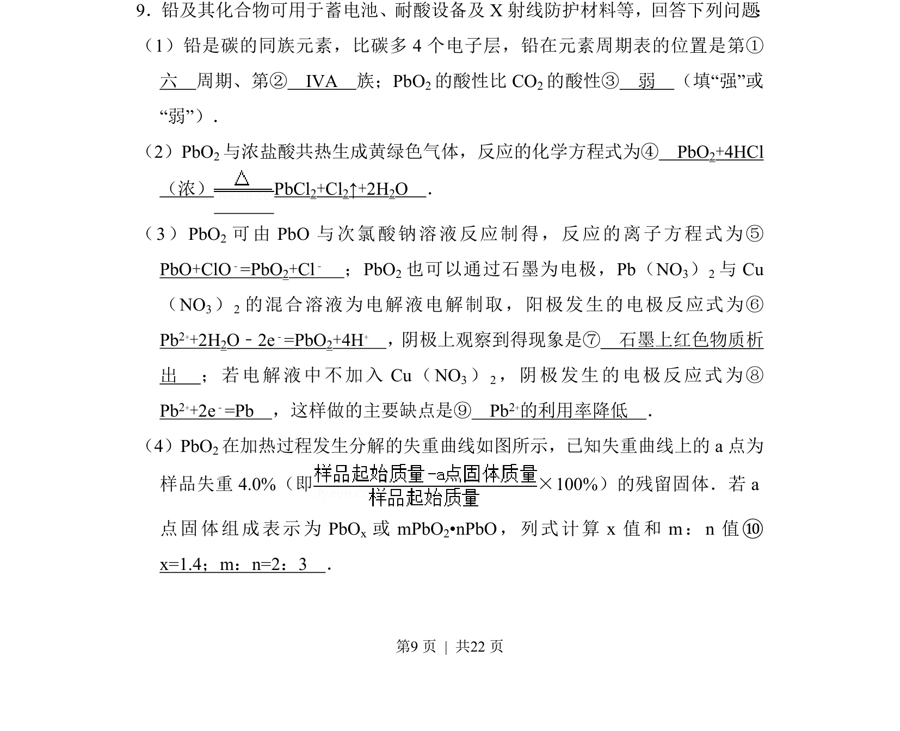
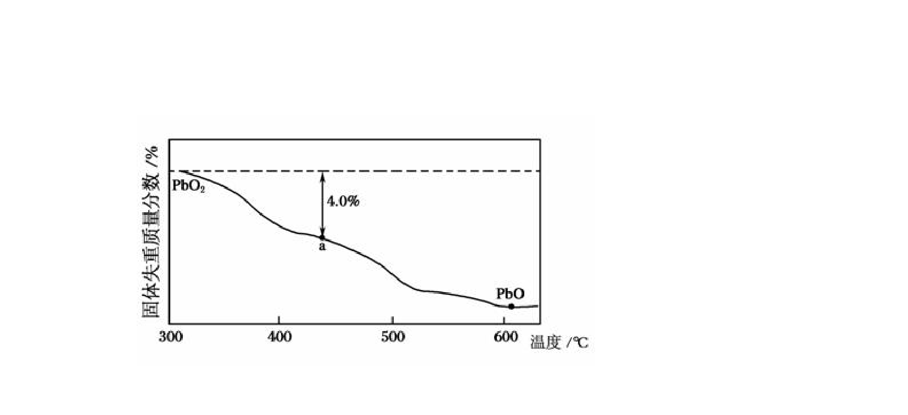
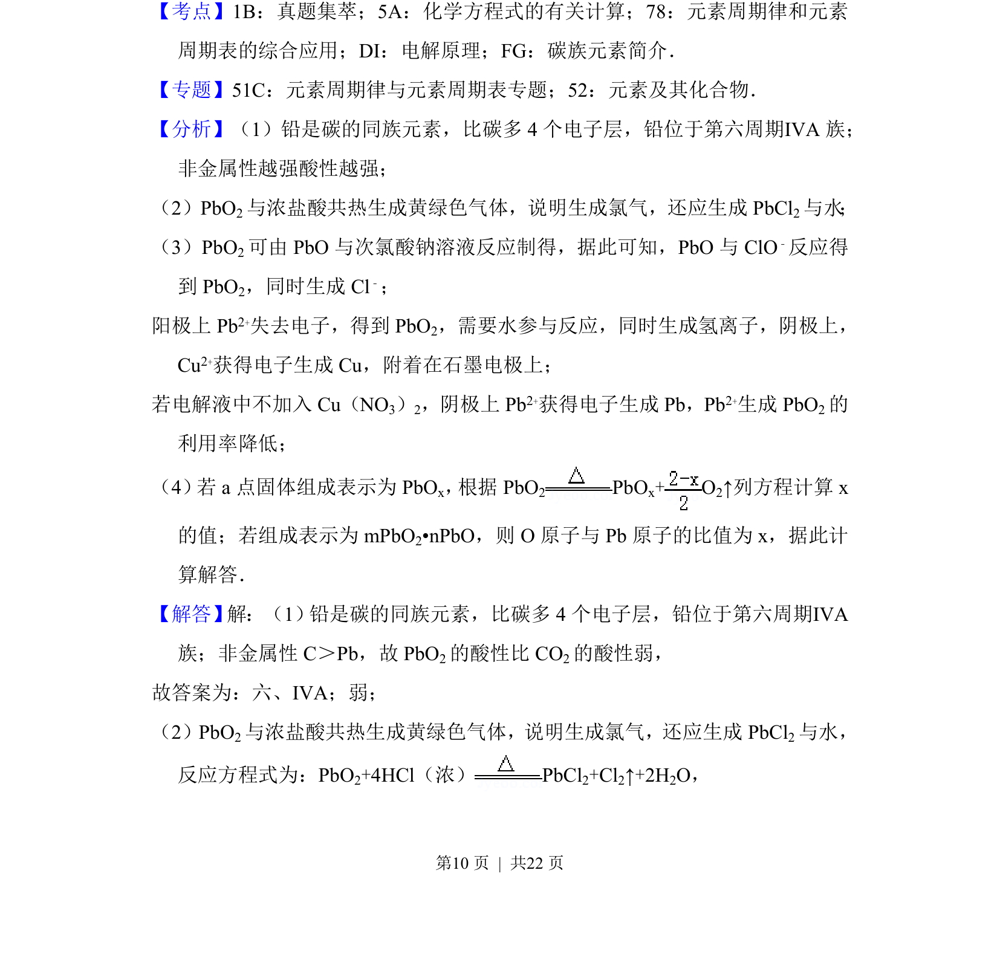
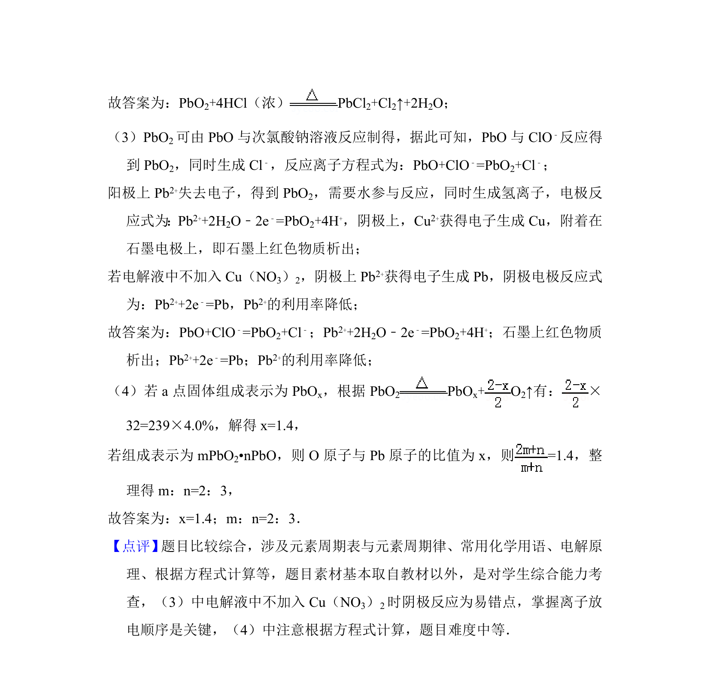

考点：元素周期律 氧化还原反应 电化学 化学计算


铅及其化合物的性质与应用，涵盖周期表位置、酸性比较、氧化还原反应、电解及热分解计算。


📄 原 PDF 第 9 页：
素材/真题/吉林/2008-2024·（吉林）化学高考真题/2014年高考化学试卷（新课标Ⅱ）（解析卷）.pdf
9．铅及其化合物可用于蓄电池、耐酸设备及X射线防护材料等，回答下列问题 ： （1）铅是碳的同族元素，比碳多4个电子层，铅在元素周期表的位置是第① 六 周期、第② ⅣA 族；PbO 2的酸性比CO 2的酸性③ 弱 （填“强”或 “弱”）． （2）PbO2与浓盐酸共热生成黄绿色气体，反应的化学方程式为④ PbO2+4HCl （浓） PbCl2+Cl2↑+2H2O ． （3）PbO 2 可由PbO与次氯酸钠溶液反应制得，反应的离子方程式为⑤ PbO+ClO﹣=PbO2+Cl﹣ ；PbO 2也可以通过石墨为电极，Pb（NO 3）2与Cu （NO 3） 2 的混合溶液为电解液电解制取，阳极发生的电极反应式为⑥ Pb2++2H2O﹣2e﹣=PbO2+4H+ ，阴极上观察到得现象是⑦ 石墨上红色物质析 出 ；若电解液中不加入Cu（NO 3） 2，阴极发生的电极反应式为⑧ Pb2++2e﹣=Pb ，这样做的主要缺点是⑨ Pb2+的利用率降低 ． （4）PbO2在加热过程发生分解的失重曲线如图所示，已知失重曲线上的a点为 样品失重4.0%（即×100%）的残留固体．若a 点固体组成表示为PbO x 或mPbO 2•nPbO，列式计算x值和m：n值⑩ x=1.4；m：n=2：3 ．